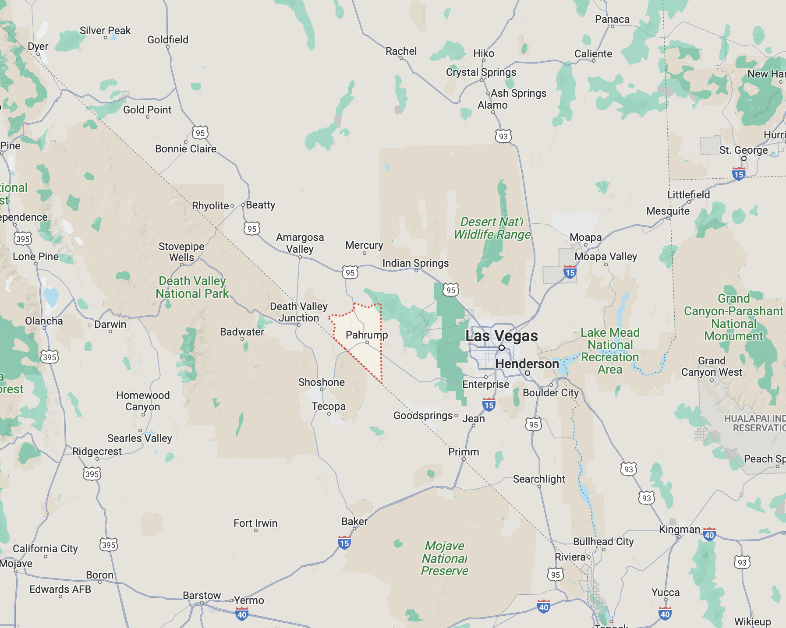

Isolated Towns
I am interested in IO and urban econ, so it is inevitable that I would start thinking about isolated towns. A few papers have used the idea of an isolated town to study industry dynamics and entry conditions. I will try to dig into those more later, but I wanted to start with how to even get a dataset of isolated towns.
What ‘town’ data do we have?
The closest data-product we have for a town is the Cenus Designated Place (CDP). These are “population concentrations” used for statistical purposes. CDPs include large incorporated cities, such as all five boroughs of New York as the New York place, and unincorporated areas, such as Manchester Center, VT. CDPs are not nested within any other geography; i.e., they do not respect counties or ZCTAs.
For this project, we want three pieces of data: (1) place demographics, (2) place distance relationships, and (3) place-ZCTA concordances. We want demographics so that we know population of the areas; we want distances so that we can tell who is close to whom; we want concordances so that we can link to firm data. Luckily, we have all three readily available!
The NHGIS has collected demographic data for places. The NBER has created distance relationships using geographic interior points. Finally, the Missouri Census Data Center manages GEOCORR to create crosswalks between geography types (within a year, not across); although, I do not use this in this post.
Starting Point: Allan Collard-Wexler
Prof. Allan Collard-Wexler has created an example, which certainly inspired me, for creating an isolated towns dataset. You can find his data here and his tutorial here. I should note two things. First, I cannot replicate his towns. Second, I think there could be some issues with the towns he identifies. I will discuss both points later.
For his tutorial:
- Data : 1990 and 2000 Census Place Gazette file
- He says cuts are based on 1990 population, but the data have 2000 population
- I am not sure how he is geolocating the places
- The Gazette files have an interior point, but it is possible he calculates his own
- I use the NBER place-distances
- A town must have greater than 4000 people
- The tutorial table says 2000, but the minimum population in his data is just above 4000
- To be a neighboring town, a neighbor must have 4000 people
- Any town within 1 mile is not considered a separate town
Thus, I will try to replicate his dataset. Point 1 highlights that I do not know how ACW geolocates the places and I use the NBER file. Although, I have done the analysis using population weighted centroids from GEOCORR, and find essentially no differences. Point 4 is actually a little tricky to deal with, so I am going to skip it for now and merge the ACW data with NBER distance data (and population data from NHGIS).
# Load libraries
library(tidyverse)
### ACW data
acw.df <- read_csv("lonesome449.csv")
acw.df$placefip <- paste0(acw.df$stfips,acw.df$placefip)
# Note, ACW's lowest pop is 4k not 2k and is for year 2000
min(acw.df$population)
# Also, AK is still in the data
length(acw.df$placefip[acw.df$stfips=="02"])
### NHGIS data on places in 2000
place.00.dat <- read_csv("nhgis0058_ds146_2000_place.csv")
colnames(place.00.dat) <- tolower(colnames(place.00.dat))
place.00.dat$place.fip <- paste0(place.00.dat$statea,place.00.dat$placea)
place.00.dat <- place.00.dat %>%
select(year, stusab,statea, place,place.fip,placecc,placedc,arealand,areawatr,intptlat,intplon,
fl5001,fnh001,fki001)
#
colnames(place.00.dat) <- c("year", "stabbr","state.fip",
"place.nm","place.fip","placecc","placedc",
"place.area.land","place.area.water","place.lat","place.lng",
"pop","households","housing.units")
### NBER data on place distances in 2000
place.00.dist <- read_csv("sf12000placedistance50miles.csv")
place.00.dist <- place.00.dist %>%
mutate(place1 = paste0(state1,place1),
place2 = paste0(state2,place2)) %>%
select(place1,mi_to_place,place2)
### Drop HI and other areas
# ACW says it is only continental US, but data has AK
# NHGIS file only has 50states place DC, so filter out HI
place.00.dat <- place.00.dat %>%
filter(stabbr!="HI")
# filter out from NBER file
place.00.dist <- place.00.dist %>%
mutate(tmp = str_sub(place1,1,2)) %>%
filter(tmp %in% unique(place.00.dat$state.fip)) %>%
select(-tmp)
### Combine the NHGIS and NBER
# need to add pop data to the NBER file
# probably a better way to do this, but creating helper file, delete later
place.00.dat.use <- place.00.dat %>%
select(place.fip,pop,place.nm)
colnames(place.00.dat.use) <- c("place1","pop","place.nm")
#
place.00.df <- full_join(place.00.dat.use,place.00.dist) %>%
left_join(place.00.dat.use,by=c("place2"="place1"))
# add places with minimum distances greater than 50
place.00.df$tmp <- is.na(place.00.df$mi_to_place)
place.00.df$place2[place.00.df$tmp==T] <- "9999999"
place.00.df$place.nm.y[place.00.df$tmp==T] <- "none"
place.00.df$pop.y[place.00.df$tmp==T] <- 0
place.00.df$mi_to_place[place.00.df$tmp==T] <- 999
place.00.df$tmp <- NULL
rm(place.00.dat.use)
gc()
#### Combine Dist with ACW
acw.dist <- acw.df %>%
left_join(place.00.df, by=c("placefip"="place1")) %>%
select(-c(class,stfips,nbr30,nbr40,autoroute))
# how many of the places have neighbors with pop>4000 within (5,15) miles
# note: use (5,15) since there could be some error in the distances from NBER and ACW
length(unique(acw.dist$placefip[acw.dist$mi_to_place<15
& acw.dist$mi_to_place>5
& acw.dist$pop.y>4000]))
# = 20So there are 20 places that seemingly violate the ACW rule. One example is Oak Grove city of KY (pop 7,064) and Clarksville city of TN (pop 103,455) that are 7.64 miles apart. Another is Two Rivers city of WI (pop 12,639) and Manitowoc city also of WI (pop 34,053) that are 6.34 miles apart. Ultimately, there are 82 places that have population above 4000 and between (1,20) miles based on NBER.
Taking a stab at isolated towns
The following code uses the first three rules to create a list of towns.
clw.df <- place.00.df %>%
ungroup() %>%
filter(pop.x>=4000) %>%
mutate(issue = pop.y>=4000 & mi_to_place<=20) %>%
group_by(place1) %>%
mutate(issues = sum(issue,na.rm = T),
num.around = sum(mi_to_place<=20,na.rm=T),
pop.around = sum(pop.y*(mi_to_place<=20),na.rm = T)) %>%
filter(issues==0) %>%
arrange(mi_to_place) %>%
filter(row_number()==1)
length(clw.df$place1)
# =541
length(unique(clw.df$place1[!(clw.df$place1 %in% unique(acw.df$placefip) )]))
# =174 places in CLW list that are not in the ACW list
length(unique(clw.df$place1[(clw.df$place1 %in% unique(acw.df$placefip) )]))
# =367 places in both CLW list and ACW list
# Pop Around
summary(clw.df$num.around)
# Min. 1st Qu. Median Mean 3rd Qu. Max.
# 0.000 3.000 7.000 8.072 12.000 32.000
summary(clw.df$pop.around)
# Min. 1st Qu. Median Mean 3rd Qu. Max.
# 0 2338 5832 6597 9160 29508
#
length(clw.df$place1[clw.df$pop.around>10000])
# =112
length(clw.df$place1[clw.df$pop.around<5000])
# =243But one thing that I noticed is that many of these towns still have many neighbors and high surrounding populations even if no place has a large population. The mean population within 20 miles of an isolated town is about 6,600 people and the median is about 5,800. There are 112 towns with over 10,000 around them () There are only 243 isolated towns using the three rules with a surrounding population less than 5,000. This issue is also present in the ACW data.
Using all four rules to make isolated towns
I am going to interpret rule 4 (again, this is if the centroid is within X miles then the same town) to include any place no matter the population (whereas, I expect that ACW meant it only for those places with over 4,000 population), I am going to do this in a network way (so that if A is close to B and B is close to C, then {A,B,C} are in a group together), and I am going to use 2 miles rather than 1 mile as in ACW. I am going to find groups by using the igraph package.
library(igraph)
# isolate the places that are very close -- 2miles
v.close.places <- place.00.df %>%
filter(mi_to_place<2) %>%
select(place1,place2)
# using the igraph package, find the network of places
v.close.places.graph <- graph.data.frame(v.close.places)
# manipulate to get the places in a data.frame
v.close.members <- data.frame(place.groups = clusters(v.close.places.graph)$membership)
v.close.members$place <- str_pad(row.names(v.close.members),width=7,pad="0")
# join with the place data, we are going to use the place in the network that has the highest population
v.close.members <- v.close.members %>%
left_join(place.00.dat[,c("place.fip","pop")], by=c("place"="place.fip"))
# create the data.frame we will merge into place.00.df
v.close.members <- v.close.members %>%
group_by(place.groups) %>%
filter(pop==max(pop)) %>%
select(-pop) %>%
rename(rep.place=place) %>%
full_join(v.close.members) %>%
ungroup() %>%
group_by(place.groups) %>%
mutate(pop.z = sum(pop)) %>%
select(-pop)
# clean up
rm(v.close.places,v.close.places.graph)
gc()
# create dataset of places where the very close ones are merged together
# remove if place1=place2
# keep the places with minimum distance (conservative method)
v.place.00.df <- place.00.df %>%
left_join(v.close.members, by=c("place1"="place")) %>%
left_join(v.close.members, by=c("place2"="place")) %>%
mutate(place1 = if_else(is.na(rep.place.x),place1,rep.place.x)) %>%
mutate(place2 = if_else(is.na(rep.place.y),place2,rep.place.y)) %>%
mutate(tmp = place1==place2,
pop.x = if_else(tmp==T,pop.z.x,pop.x),
pop.y = if_else(tmp==T,pop.z.x,pop.y)
) %>%
ungroup() %>%
group_by(place1,place2) %>%
filter(mi_to_place==min(mi_to_place)) %>%
ungroup() %>%
filter(tmp==F) %>%
select(place1,pop.x,place.nm.x,mi_to_place,place2,pop.y,place.nm.y)
# use the same code as before to get the isolated towns
v.clw.df <- v.place.00.df %>%
ungroup() %>%
filter(pop.x>=4000) %>%
mutate(issue = pop.y>=4000 & mi_to_place<=20) %>%
group_by(place1) %>%
mutate(issues = sum(issue,na.rm = T),
num.around = sum((mi_to_place<=20),na.rm=T),
pop.around = sum(pop.y*(mi_to_place<=20),na.rm=T)) %>%
filter(issues==0) %>%
arrange(mi_to_place) %>%
filter(row_number()==1) %>%
select(-c(issue,issues))
length(v.clw.df$place1)
# =651
length(v.clw.df$place1[!(v.clw.df$place1 %in% clw.df$place1)])
# 112
length(v.clw.df$place1[(v.clw.df$place1 %in% clw.df$place1)])
# 539
length(clw.df$place1[!(clw.df$place1 %in% v.clw.df$place1)])
# 2
summary(v.clw.df$num.around)
# Min. 1st Qu. Median Mean 3rd Qu. Max.
# 0.000 3.000 6.000 7.329 11.000 34.000
summary(v.clw.df$pop.around)
# Min. 1st Qu. Median Mean 3rd Qu. Max.
# 0 2100 5126 6221 8785 31483
length(v.clw.df$place1[v.clw.df$pop.around>10000])
# =122
length(v.clw.df$place1[v.clw.df$pop.around<5000])
# =316This increases the number of isolated towns because there are small close places that end up being added together to get above 4,000 population. There are 112 places that are in v.clw.df but not clw.df and two in clw.df but not in v.clw.df. The mean and median population around a town has gone down, likely because some have been absorbed into the new combined place. Finally, there are again 112 places that have surrounding populations over 10,000.
Conclusion
I have pointed out some data sources, looked at the ACW data, and tried to come up with two alternative lists. ACW also connects the towns with zipcodes, which helps when combining with the ZBP, which I have not done.